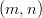
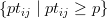

4.2.4 Beam Search Verfahren mit Einfügetechnik
Beam Search Verfahren sind eine heuristische Variante des Branch & Bound Verfahren (→
4.1.1). Im Unterschied zu diesem ist bei ihnen die Anzahl der untersuchten Teillösungen in jedem
Knoten des Lösungsbaumes beschränkt. Das führt zu einer unvollständigen Suche im
Lösungsraum, die möglicherweise sämtliche optimalen Lösungen ausschließt. Allerdings sind
Verfahren dieser Art jedoch auch bedeutend schneller als ein umfangreicher Branch & Bound
Algorithmus. Die Qualität der Lösung hängt dabei sowohl vom gewählten Problemtyp, als auch
von den gewählten Einstellungen ab.
Beim Einfüge-Verfahren wird die Reihenfolge, in der die Operationen zu den jeweiligen Teilplänen
hinzugefügt werden, vorher festgelegt. Für jeden Teilplan und jede neue Operation werden dann
verschiedene zulässige Positionen betrachtet, in die die neue Operation mit einem von mehreren
möglichen Rängen eingefügt werden kann. Neben dem Einfüge-Verfahren ist auch ein
Anfüge-Verfahren (→4.2.3) in LiSA implementiert.
Aufruf
Nach Eingabe von Problemtyp und erforderlichen Parametern wählt man Heuristische
Verfahren/Beam Search (Einfügen) im Menü Algorithmen.
Einstellungen
-
Anzahl zu verfolgender Zweige:
- Hier wird festgelegt, wie viele der in jedem Schritt neu
erzeugten Teilpläne weiterbetrachtet werden sollen.
-
Einfügereihenfolge:
- Hier wird die Reihenfolge festgelegt, in der die Operationen zu den
Teilplänen hinzugefügt werden sollen.
- MACHINEWISE: Die Operationen werden spaltenweise angeordnet.
- DIAGONAL: Diese Strategie basiert auf der Betrachtung von Diagonalen in
einem Quadrat der Größe M = min .
- QUEEN_SWEEP: Diese Strategie basiert auf der Betrachtung von
unabhängigen Mengen als Lösungen eines M-Damen Problems auf einem M ×
M-Schachbrett (M = min ).
- RANDOM: Die Operationen werden in zufälliger Reihenfolge eingefügt.
- LPT (longest processing time): Die Operationen werden nach fallenden
Bearbeitungszeiten geordnet.
- ECT (earliest completion time): Die jeweils einzufügende Operation wird für
jeden Teilplan so ausgewählt, dass die Fertigstellungszeit für den neuen Teilplan
minimal wird. Im Unterschied zu allen anderen Strategien zur Auswahl der
Einfügereihenfolge, ist diese Auswahl nicht global. In jedem Schritt wird für jeden
betrachteten Teilplan die Operation bestimmt, die als nächste eingefügt wird.
- SPT (shortest processing time): Die Operationen werden nach aufsteigenden
Bearbeitungszeiten geordnet.
-
Auswahlmethode:
- Hier wird festgelegt, wie die gewählte Anzahl der Teilpläne, die weiter
betrachtet werden sollen (Anzahl zu verfolgender Zweige), ausgewählt werden. Die
Teilpläne werden dabei mit ihren Zielfunktionswerten bewertet.
- INSERT1: Aus der Gesamtheit aller in einem Iterationsschritt zur Verfügung
stehenden Kinder-Pläne werden die besten ausgewählt.
- INSERT2: Es wird für jeden Vater-Plan genau ein (bester) Kind-Plan
ausgewählt, unabhängig davon, ob dieser global erfolgversprechend ist oder nicht.
-
Auswahlkriterium:
- Diese Option steht nur bei Cmax-Problemen zur Verfügung. Sie stellt eine
alternative Bewertungsmethode für die Teilpläne zur Verfügung.
- OBJECTIVE: Der Zielfunktionswert wird zur Bewertung eines Teilplans
benutzt. Dies ist die Standardmethode.
- CLAST: Als Bewertung eines Teilplans dienen die Kosten eines längsten Weges
durch die Operation, die als letzte eingefügt wurde.
Aufruf in der Autoalg-Eingabedatei
In der Eingabedatei für die Autoalg-Funktion (→7.3) werden Beam Search Einfüge-Verfahren
wie folgt aufgerufen:
<CONTROLPARAMETERS>
string AUTOALG_EXECUTABLE beam
string MODE INSERT
string INS_ORDER LPT
string INS_METHOD INSERT1
string CRITERION OBJECTIVE
long k_BRANCHES 5
</CONTROLPARAMETERS>
Die Reihenfolge, in der die Parameter aufgerufen werden, ist dabei irrelevant. Bei optionalen
Parametern ist hier jeweils der default-Wert angegeben.
Als ausführbare Datei muss für alle Beam Search Verfahren beam aufgerufen werden. Die Angabe
des Beam Search-Modus ist ebenso obligatorisch, wie eine Angabe zur Einfügereihenfolge.
Danach können optional die Parameter für die Auswahlmethode, das Auswahlkriterium, und
die Anzahl zu verfolgender Zweige gesetzt werden.